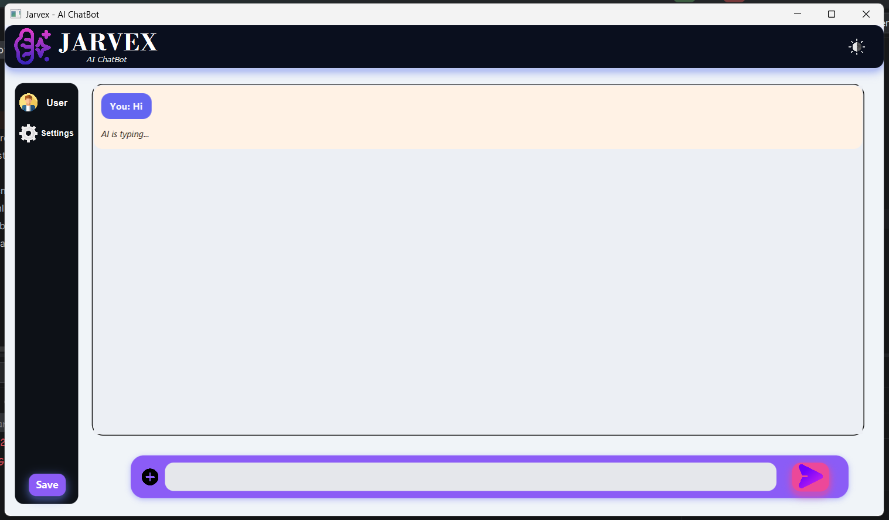
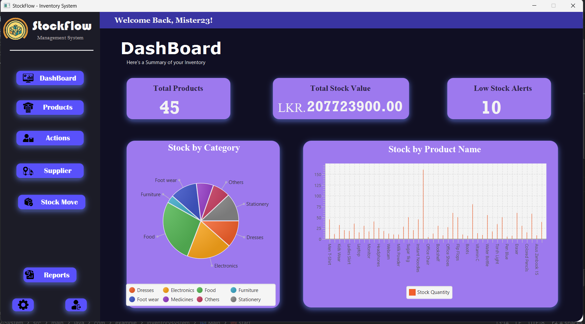
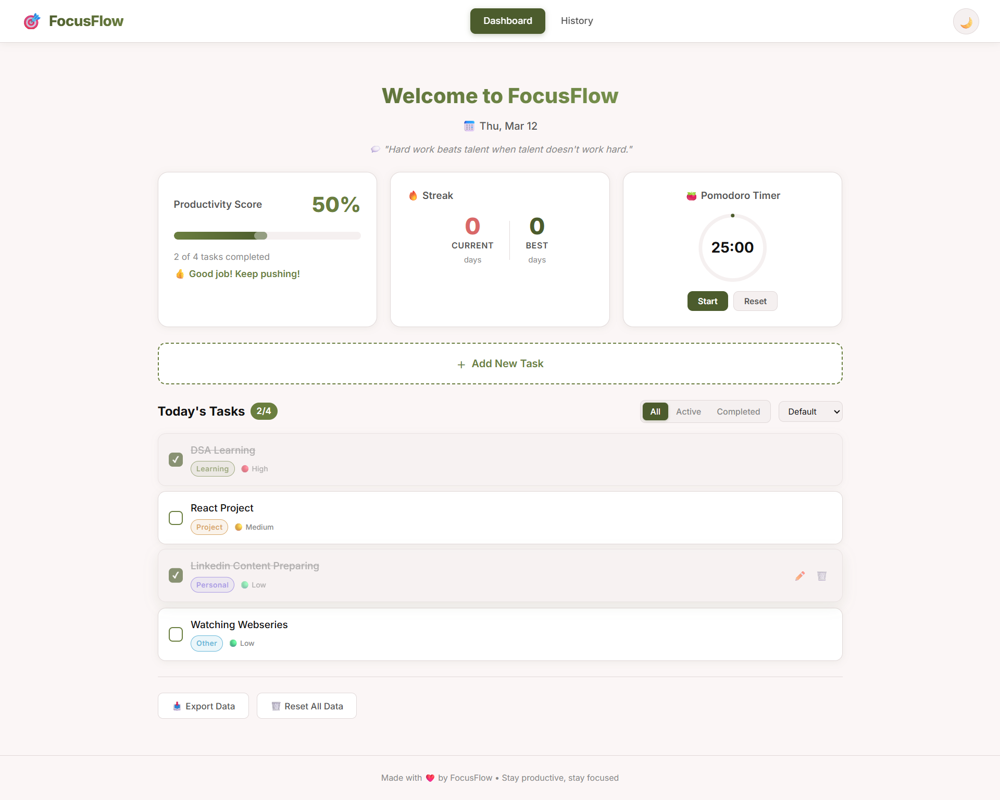
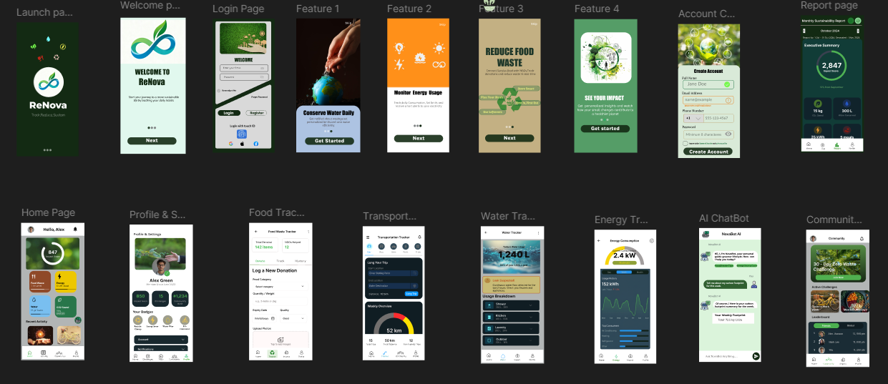
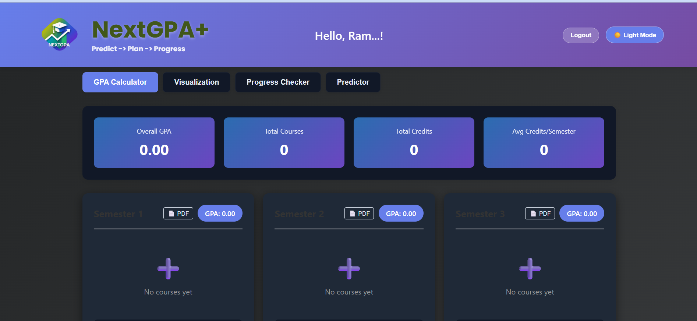
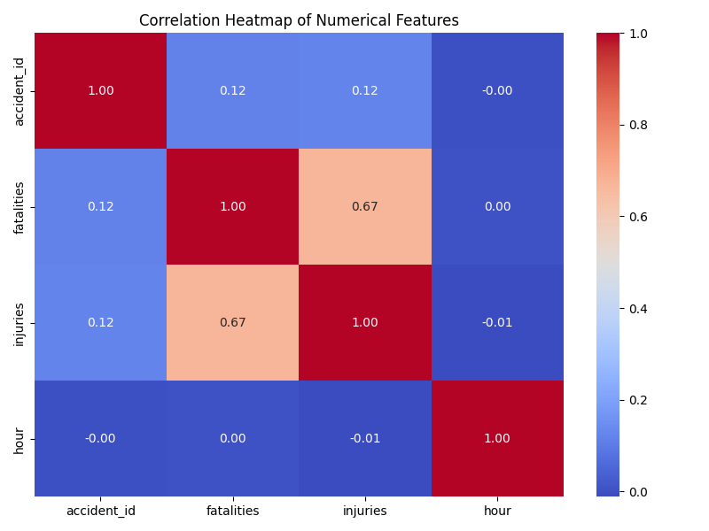
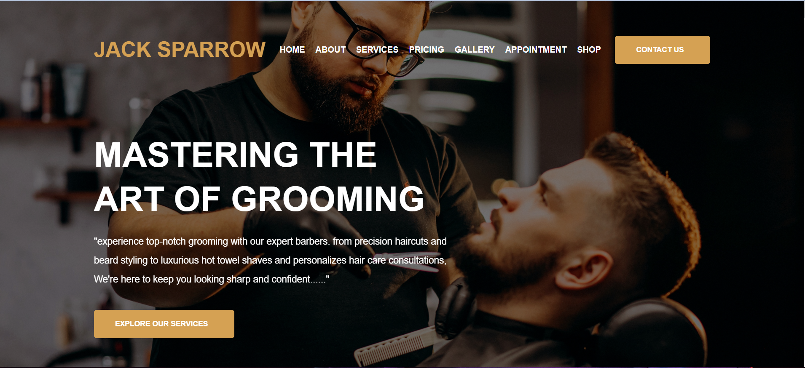
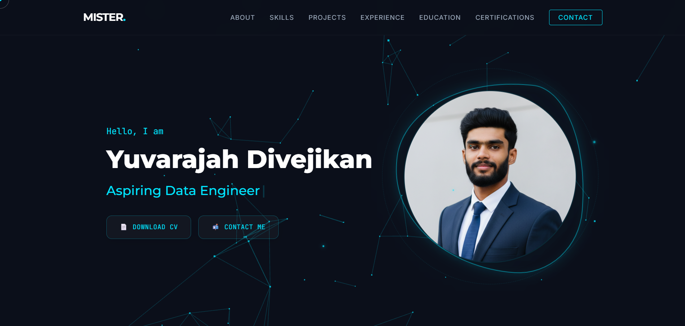
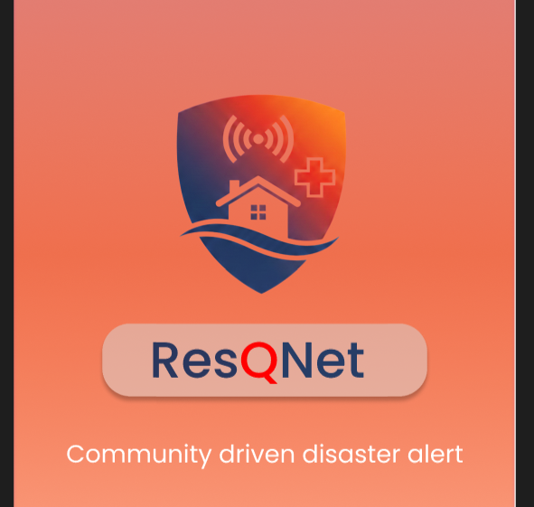

Programming & scripting
Languages represented across desktop software, web applications, and data analysis.
Hello, I'm Divejikan
I build intelligent software and practical AI-powered products, turning real-world problems into clear digital solutions.
Download CVFounder & CEO at Zatroz Co-Founder & Technical Lead at Softora BICT (Hons) undergraduate, SEUSL
Beyond the code
I’m Divejikan, a BICT (Hons) undergraduate at South Eastern University of Sri Lanka, focused on software engineering and practical AI. I enjoy turning real problems into usable products, from full-stack applications and workflow automation to intelligent tools that make complex work simpler.
As Founder & CEO of Zatroz and Co-Founder & Technical Lead at Softora, I connect product thinking with hands-on engineering. I’m especially interested in agentic AI, retrieval-augmented generation, and digital tools that help businesses, SMEs, and public services solve everyday problems.
Explore my projectsFull-stack software shaped around a clear user need.
Exploring AI/ML, RAG, and agentic systems for practical workflows.
Interested in useful tools for businesses, communities, and public services.
Tools in practice
A practical toolkit shaped by building web products, desktop applications, data projects, and interactive experiences.
Languages represented across desktop software, web applications, and data analysis.
Web technologies and charting used across portfolio projects.
JavaFX desktop work includes a chatbot project listing Perplexity AI integration.
The current portfolio uses these technologies for its interactive scene.
Listed for the inventory system and Sri Lanka accident analysis project.
Design tools appear in sustainability and disaster-response work; repositories are hosted on GitHub.
SELECTED WORK
Applied AI, full-stack products and practical tools shaped around real problems.
Showing all projects
Built · Buildathon project
Financial health and cash-flow intelligence for Sri Lankan SMEs, including stress testing and payment-recovery workflows.
Collaborator project · public preview
An AI-powered business operating system described in a collaborator's public repository. The repository and preview belong to the wider project team.
The public preview includes unverified promotional claims; this portfolio does not repeat them.
Prototype · deployment unverified
A health-memory prototype for extracting medical documents, asking questions with source references and supporting doctor referrals.
A project prototype, not a diagnostic service or substitute for professional care.
In development
A national infrastructure coordination platform concept focused on shared project visibility and interagency planning. Capabilities remain in development.
Prototype
Invoice-processing workflow combining OCR and AI extraction with validation, Supabase storage and Telegram alerts.
Local MVP · no hosted service
Confidence-aware GitHub issue triage that routes uncertain decisions for human review instead of silently guessing.
Built
A Chrome study assistant concept for explaining webpages and creating study materials, with data kept in browser storage.
Built · rules-based scoring
A hiring platform prototype that scores and ranks applicants with configurable rules, not an AI inference classifier.

Desktop application
A Java desktop chatbot integrating an external AI service in a JavaFX interface.

Desktop application
A JavaFX inventory-management application backed by a MySQL database.

Earlier project
A productivity tracker for tasks and progress, with charts to explore personal work patterns.

Product design
A mobile product design concept for making environmental tracking more engaging.

Web application
A browser-based GPA tracker for reviewing academic performance and exploring forecasts.

Data analysis
An analysis project exploring road-accident patterns by severity and location.

Live demo
A local barbershop website with service information and an online booking flow.

Portfolio
A portfolio experiment using Three.js to create an interactive particle scene.

Product design
A design concept connecting affected communities with volunteers, donors and authorities.
Achievements
A few milestones earned by turning ideas into working systems under real competition constraints.
Featured result May 2026
FlowPilot AI Team ZeroDB
Built FlowPilot AI with Team ZeroDB for the Seylan Bank API track: an AI-assisted financial operations concept for small and medium-sized businesses.
Competition result
1st Place FinTech Track
Top 10 Overall
Finalist
MediGuardian AI
Advanced to the final round with an AI health-memory and safety concept.
Explore the MediGuardian AI case studyTop 25
Team Zatroz
Progressed to the Top 25 stage of the national innovation competition.
1st Runner-Up
Team NeuraForm 2025/26
Recognized as first runner-up in the interfaculty design competition.
Professional journey
Building technology ventures and applying software engineering to practical business challenges, alongside previous professional operations experience.
01 / NOW
Technology venture
Founder & CEO
Building Zatroz around practical websites, custom software and AI-enabled business solutions, with a focus on product direction and technical planning.
Technology venture
Co-Founder & Technical Lead
Co-founding Softora and contributing to technical direction, solution planning and software development.
02 / BEFORE
Data Entry Clerk
Supported data entry and record maintenance as part of the organization's operations.
Banking Trainee Intern
–
Beyond the code
I value the communities behind great technology. Alongside building software, I contribute to student tech initiatives and organizations that bring people together.
Student technology leadership
Technical Lead (Core Team)
Serving on the technical leadership team of the AWS Student Builder Group at South Eastern University of Sri Lanka, contributing to a student community focused on cloud and modern development.
Organization-building
Co-Founder & Head of Finance
Organizational leadership
Vice President
Community connections
Affiliations listed in my CV; specific roles and dates are not stated.
Formal education
My academic path through information technology and engineering.
South Eastern University of Sri Lanka (SEUSL)
London School of Business and Social Sciences (LSBSS)
T/T/Vipulanada College
Completed courses & learning programmes
Course and programme completions are listed separately from professional certifications.
Completed course
Anthropic
Completed course
Basic and Advanced · completed
DataCamp
Completed courses
Microsoft Learn
Completed learning
Let's connect
I'm open to software engineering opportunities, AI collaborations, meaningful projects and conversations about building useful technology.
Start a conversation
Email is the most reliable way to reach me. Choose the direct link or prepare a message on this page.
Email medivejuthe@gmail.com